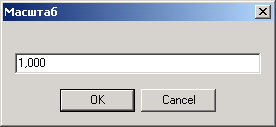

Первая увеличивает текущий масштаб вдвое, вторая - вдвое уменьшает. Третья кнопка позволяет установить масштаб точно:

Эти размеры можно изменить через главное меню окна, в котором находится чертеж, через пункт Чертеж -> Масштаб .
|
Масштаб
|
Назад В начало Вперед |